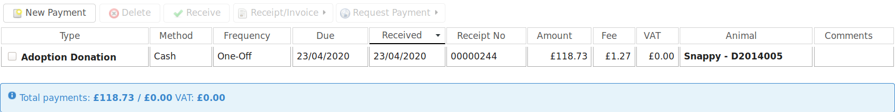
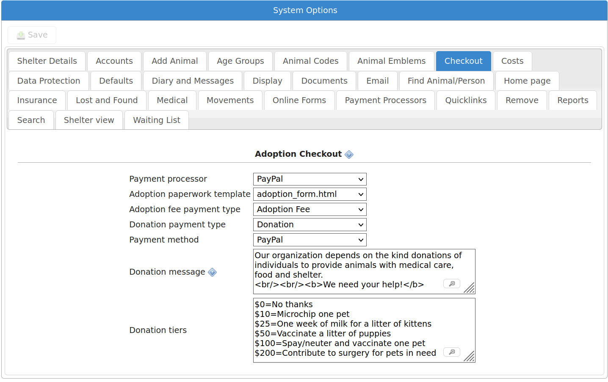
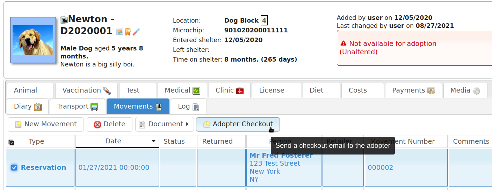
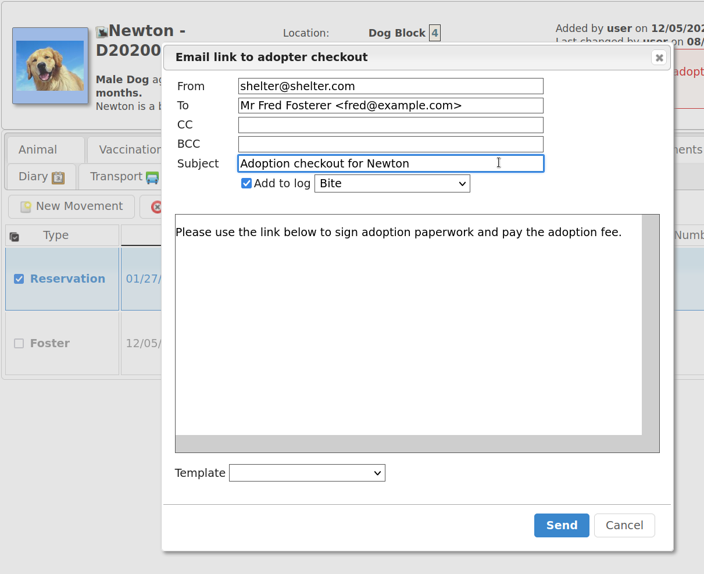
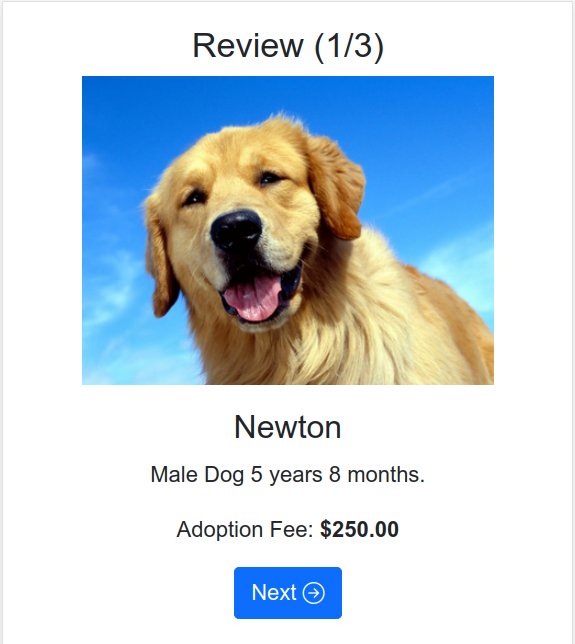
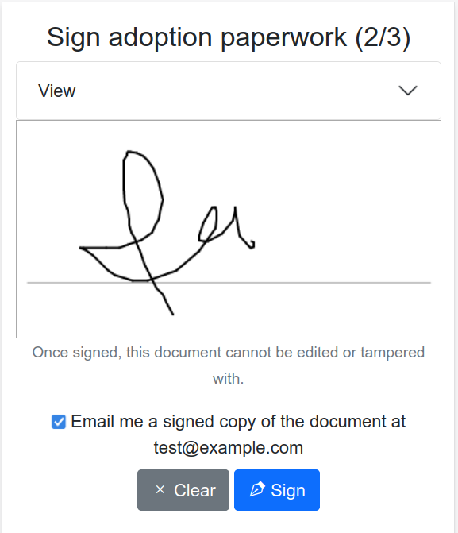
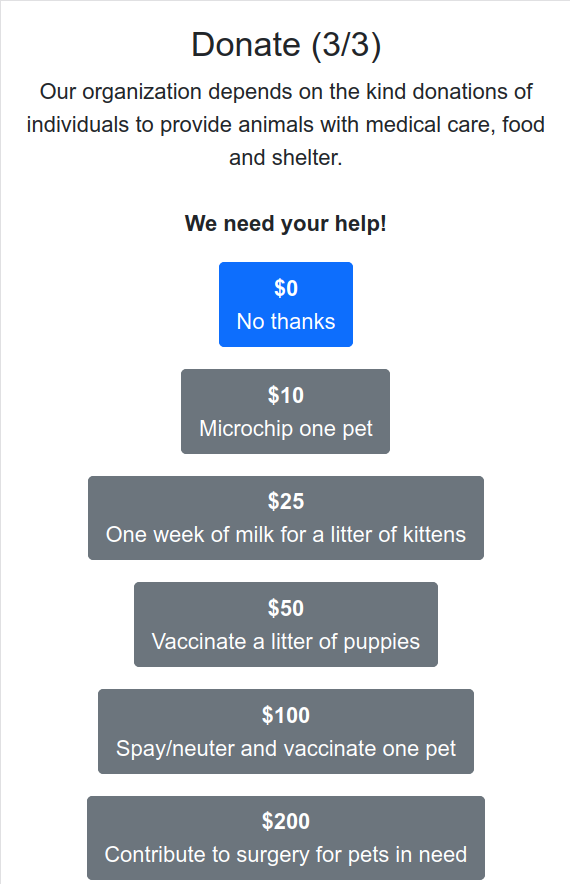
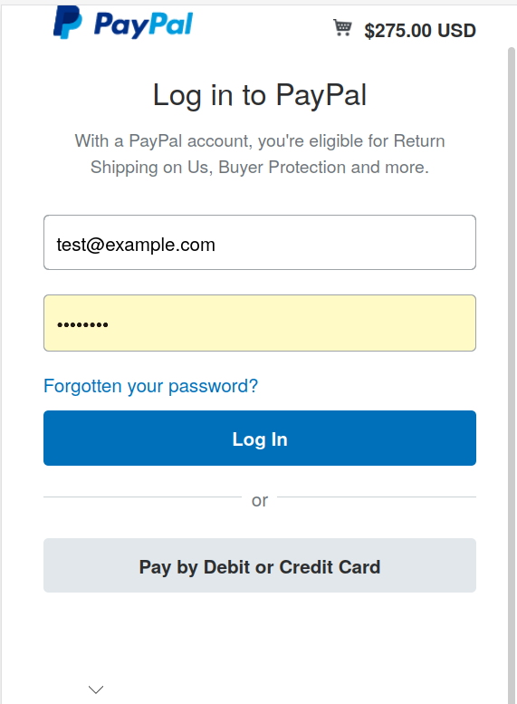

Payment Processors¶
ASM can request due payments from customers via a payment processor. Currently, support is available for PayPal, Stripe and Cardcom (Israel only).
For details on configuring payment processors from the options screen at , see Payment Processors
Requesting a payment¶
To request a payment from a customer, first create that payment in either the payment tab for a person or animal, or
Your payment should have a due date, but no received date.

Next, request payment from the customer by selecting your payment from the list and clicking “Request Payment” followed by the processor you would like to use to receive the payment.

The screen will pop up an email dialog, allowing you to complete details of the message to be sent requesting the payment. Use document templates to store commonly used emails and populate the text by choosing them from the Template dropdown at the bottom of the dialog.
The payment request link will be appended to the bottom of your message after you hit Send.
Warning
The subject line of your request email will be used as the description of the item presented to the customer when they pay.

The resulting email will end up in the customer’s inbox with a clickable link to pay with the payment processor.
Note the payment references that ASM uses are in the form of PERSON-RECEIPTNUMBER to prevent one person receiving a payment request from changing or guessing another receipt number to try and access another customer’s payment.
The subject line of your email will be used as the payment description at the checkout. ASM will default the comments from the selected payment and if they are not present, will suggest the payment type.

Once payment has been completed, the system will automatically update the received date on the payment record. If you have the option on to create matching accounting transactions for received payments, a transaction will be written at this point. If you have configured an expense account for transaction fees, a transaction will be written to deduct the fee and send it to the expense account.
Requesting fulfilment of multiple payments¶
Payment requests are linked to receipt numbers rather than individual payments.
While most payments will have their own receipt numbers, it is also possible to create multiple due payments on the same receipt number by using the or screens.
For these screens to allow you to set the due date, you need to have set the option
When choosing a due payment from the Payment Book or a payment tab, the other payments with the same receipt number will also be included and added to the payment total requested.
Adoption checkout¶
The adoption checkout feature allows an adopter to complete the adoption process on their mobile device. It allows them to view and sign their adoption paperwork, make an optional donation and then sends them off to your chosen payment processor to pay the adoption fee and donation.
To enable the feature, it must first be configured under
The configuration options allow you to choose the payment processor you want to handle the payments, the document template you want to use to create the adoption paperwork, the payment method to use when creating payments and the payment types to use when recording the adoption fee and donation.
Initiating¶
Checkout is initiated from the movement tab of the person or animal (or the reservation or “recently adopted” books). It can be done from either a reservation or adoption movement, although if you do use a reservation you will need to manually convert it to an adoption afterwards.
Select the movement and click the “Adopter checkout” button on the toolbar.
If you have not configured the feature, this button will not appear.
The button will prompt you to send an email to the adopter. Relevant information will be pre-filled and as with other email dialogs, you can use a document template or write ad-hoc content.
A link will be added below your email message that links to the checkout system.
Checkout Link¶
The adopter follows the link in the email on their mobile device (tablets and desktops can also be used, it is not limited in any way to just mobiles).
At this point the system creates the adoption paperwork on the animal and person record ready for the adopter to view and sign on their device.
The checkout will remind the adopter which animal they are adopting and the adoption fee. This value is taken from the adoption fee field on the animal’s record.
They will then be prompted to view and sign their adoption paperwork.
The adopter can also choose at this point to have a PDF of their signed adoption paperwork emailed to them.
The adopter will be asked if they would like to make a donation. The message can be configured, as can all the suggested tiers of donation.
Warning
If you remove the $0 donation tier from the list, the adopter will only be able to continue if they make a donation as they must choose one option.
When you are configuring the donation tiers, the system will show everything to the left of the = sign in bold at the top of the button. This means that you should include your currency symbol for readability as shown in the example configuration above. You can also optionally include the decimal portion if you feel it looks better - eg: $25 vs $25.00
Once the user has chosen their donation tier, the system will create due payment records for the adoption fee and donation against the animal and person. It will add their signature to the paperwork at this point and send an email containing a PDF of the paperwork to the adopter if they requested it.
Finally, the adopter will be redirected to the payment processor you have configured to take their payment online.
Depending on what apps are available on their device (eg: Google or Apple Pay) and which payment processor you are using, this can be an extremely trivial process that does not necessarily involve hand entering card numbers.
When payment is complete, the received date will be set on the two payment records for the fee and donation and any accounting transactions created. The adopter will be redirected to the success URL you configured under the payment processor options.
Incomplete payments¶
If the adopter does not complete their payment at this point, the payment records are left outstanding in the system.
If the adopter returns to the checkout by following the link again, or navigating back from the payment processor, the paperwork will not be created and signed again. The adopter can choose a new donation tier if they wish and the system will update the due donation payment record to reflect the new value that they’ve chosen. If they choose the 0 tier, the donation payment record will be deleted.
No matter how many times the adopter returns to the checkout, once payment has been made, the records will be updated.
The system will maintain the checkout state for 48 hours before removing it. After this period, the adopter will receive an error and will not be able to use their checkout link until a member of staff initiates the adoption checkout process again from the movement tab/book.
License checkout¶
TBA